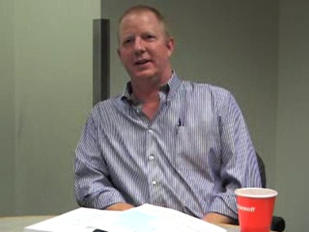
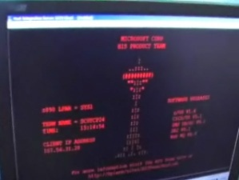
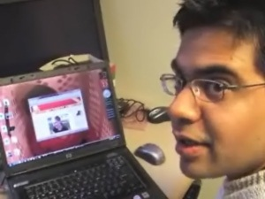

Blogs - Rory Blyth
Blogs - Rory Blyth

Channel 9 Blog for Rory
Mike Nash: Windows Vista Status Report and Announcing SP1 Beta 1 [0:27:25] [2007/09/25]
Mike Nash is a corporate vice president in charge of Windows client operating systems product management. Previously, he ran the security team that created the new security systems and features in…
Alex Hinrichs and Jeff Woolsey: Announcing Windows Server 2008 RC0 [0:26:56] [2007/09/25]
Alex Hinrichs runs the Windows Server ship room (you’ve met him
before on C9). Jeff Woolsey is a senior program manager on the Virtualization team (you’ve met him
before, too). Today, we announce…
So long, Adam Kinney... [2007/09/13]Just as you need someone behind the scenes to articulate the motions of a MuppetTM for the screen, you also need someone to sit behind a web site and get it to do stuff.
Adam Kinney was such a ma…
Tony Bernard on BizTalk [2007/08/29]For my first interview back from my little "vacation," I got to interview Tony Bernard about BizTalk.
This video focuses on EDI features of BizTalk, but in the process shows off a bit of …
Introducing the Team Foundation Server / Project Server 2007 Connector [0:40:37] [2007/08/16]
[Posted on behalf of Brian Keller.]
In this interview we asked Lenny Fenster of Microsoft Consulting Services to show us the recently released “Connector” for Team Foundation Server 2005 and…
Understanding the offline database development paradigm [0:28:18] [2007/08/16]
[Posted on behalf of Brian Keller.]
Visual Studio Team Edition for Database Professionals (or “DBPro”) introduced a new way of working with your database in an “offline” or “sandbox” mode.…
New Service Release and Power Tools for Visual Studio Team Edition for Database Professionals [0:57:19] [2007/08/16]
[Posted on behalf of Brian Keller]
Dupe. I've been gone. Didn't know it had already been posted.
Carry on.
Carry on...
Office Business Applications [2007/06/21]Something end users probably don't realize is that Office isn't just a suite of applications, but also a platform for development.
The idea behind building apps on top of Office is that you can…
The Challenges of Application Compatibility [0:50:11] [2007/06/13]
Time and time again, I've encountered online arguments in which Geek A is telling Geek B that Company C does a poor job of maintaining backward compatibility.
In these cases, I'm never quite sure…
BlueHat - #3: Paid to Break Things [2007/06/08]Robert Graham and David Maynor head up a company called
Errata Security.
These are the people you hear about when you hear about people who get paid to break things. They look for vulnerabilities…
DinnerNow - If it's an acronym, it's in DinnerNow [2007/06/07]If you haven't heard about it, DinnerNow is a demo app that shows off... well, just about everything.
WPF, WCF, Powershell, and more.
If you like what you see here, head out to the DinnerNow sit…
Ricardo Mendes on Host Integration Server [2007/06/02]Filled in for Charles Torre at the last minute on this one, and had the usual good time.
I didn't know anything about Host Integration Server until this interview. Actually, I knew that it existed,…
BlueHat - #2: Bluetooth Snipers [2007/05/31]You may have seen these guys on slashdot a couple years ago. They set out to prove that Bluetooth, despite its relatively short range, is a security hazard.
Turns out it is.
Watch.
Popfly [2007/05/19]You probably haven't heard of it, but you're also probably going to start hearing a
lot about it in the near future.
Popfly is being announced today - as I'm posting this, actually.
To keep it …
BlueHat - #1: Robert Hansen on Phishing, the Bad Guys, and the Online Mafia [2007/05/17]The BlueHat conference is an internal MS conference that's all about security. We ship a bunch of security experts from around the world to Redmond and then learn whatever
we can from them.
This …
TechEd 2007: Turn “doing your job” into “making your mark.” [2007/05/12]Next month, June 4th through the 8th, TechEd 2007 once again turns Orlando into the place-to-be.
In this video, Michael Lehman talks with Ryan Calafato and Sam Gazitt about what's hot at this year…
Jesse Lewin on knowing Steve Jobs, working at Apple, and posing with Bono [2007/05/10]Things have changed a lot around Channel 9. As you may have noticed, some people have come and gone over the past year, and the team is very different from what it used to be.
Some would say it's m…
Meet the Project Jasper Team [2007/05/09]Project Jasper is geared toward iterative and agile development. You can start interacting with the data in your database without having to create mapping files or define classes. You can build user…
Windows Mobile 6.0 Things and Stuff [2007/04/27]The Mobile and Embedded Devices Conference (MEDC) is taking place in Vegas next week, and I thought I'd post a little fun here to get things going.
Mel Sampat stopped by to demo some fancy-schman…
MSDN Wiki Projects - #4 (last) - Internationalization [2007/04/14]This is the final video in the MSDN Wiki interview series. In this segment, I talked with Fabrice and Molly about
the MSDN Internationalization Wiki.
I love language - the living ones, the dead on…
MSDN Wiki Projects - #3 - A Huge Responsibility [2007/04/13]When you're in charge of something so large, so easily modified by the public, and so potentially impactful, how do you actually
do it?
Accuracy, relevance, usefulness, language, abuse, and more…
MSDN Wiki Projects - #2 - How and Why [2007/04/11][Note: Looks like I made a couple small mistakes while chunking the original interview up into smaller pieces. While it
looked like they were ending at exactly the right time, it appears each video…
MSDN Wiki Projects - #1 - Saying Hello [2007/04/10]This short video is the first of a four part series in which I sat down with Fabrice Fonck and Molly Bostic to talk about the MSDN DevWiki project.
As usual, I walked in thinking I already had a go…
: Continuous Integration with Team Build “Orcas” [2007/03/15][Note: Although I, Rory Blyth, Channel 9 superstar and grade D internet celebrity am posting this video, I didn't actually make it. The credit goes to
Brian Keller - an evangelist for Team System. …
Microsoft Research TechFest - XNA, a depth-sensing camera, an LCD projector, and some genius [2007/03/13]There was one booth at
TechFest that was constantly jammed with people. Everybody wanted to interview
Andy Wilson.
I'm not quite sure what to call his work. I can think of all sorts of adjecti…
Microsoft Research TechFest - Using P2P to speed up multiplayer gaming (and other things) [2007/03/09]Had some technical difficulties with posting this video yesterday, but we seem to be back online and working.
That's a good thing - this another video in the
TechFest series, but it isn't espec…
Microsoft Research TechFest - Technology on the Wall [2007/03/08]TechFest is quite the event. The room it's taking place in isn't especially big, but it seems enormous because any geek with an ounce of good geeky sense knows to stop at
every single last booth.
…
Microsoft Research TechFest - Intro, DynaVis, and FastDash [2007/03/07]If you could see me now, I'm a giddy, happy, silly little niner.
I just learned about something at Microsoft that happens every year called "TechFest". It's a convention for
Microsoft …
Anand Iyer - Life in the Field, Racism in the Tech Industry, and More... [2007/02/22]Anand Iyer is an old friend of mine. We met on
the MSDN Events team.
We did not, however work together all that much. The MSDN Events team is distributed, with different employees living in differ…
Migrating to Team Foundation Server with Matthew Mitrik [2007/02/16][Note: This interview, although posted by me (Rory), was actually conducted by Brian Keller - our
technical evangelist for Team System.]
So you want to use Team Foundation Server… but how do you…
The C# Disco Floor Guy - Clint Rutkas [2007/02/15]I first learned about Clint Rutkas when I read a Coding4Fun article in which he described what it took to build a C#-driven disco
floor for his apartment (Clint has since become
the Coding4Fun blo…
Sampy Gets Shot in the Face - A Channel 9 Exclusive [0:02:47] [2007/02/02]Yeah - you read it correctly.
Our very own Mike Sampson, known around here as "Sampy", got shot in the face today by
Jesse Lewin of 10 fame.
You might be asking yourself: Why?
The…
Branching 101 with Doug Neumann - Visual Studio Team Foundation Server [2007/02/02][Note: This is the first in a series of videos on Visual Studio Team System from
Brian Keller. Thanks for the content, Brian ]
The ability to branch and merge source code with Visual Studio Te…
WPF State of the Nation [2007/01/31]Tim Sneath sat down recently with Ian Ellison-Taylor, the Product Unit Manager for Windows Presentation Foundation, to chat about how this technology has evolved since its inception and where it’s g…
Patterns and Practices - A Team of Thieves [2007/01/26]This was easily one of the most enjoyable interviews I've gotten to conduct since arriving at Channel 9.
I had been wanting to interview Peter Provost for some time, and finally got the chance a fe…
Brad Abrams on AJAX for ISVs [2007/01/20]James Vastbinder, ISV Architecture Evangelist, was able to find 30 minutes on Brad's very busy calendar to talk with him about Microsoft’s newest User Interface technology, ASP.NET AJAX. Brad began…
New Vista GUI Stuff For Devs [2007/01/18]I recently had the chance to meet up with Kam VedBrat, lead program manager of Expression Web.
Before working on Expression Web, though, Kam made his way through quite a few other divisions here at…
Scott Guthrie - MIX07, Work, and Personal Details Revealed [0:42:20] [2007/01/12]
This was the first time I had ever met
Scott Guthrie in person.
Like many devs working with MS dev tools, I was quite familiar with the guy - just about everything he says is useful. I used to…
Adam Carter and Mike Adams on Managed Services [2007/01/10]This video came to us from Adam Carter. I'll let him introduce it all himself:
Back in October, I posted a
blog entry asking who people would want to hear from in MS IT about their work. I got j…
Windows Home Server [2007/01/09]Microsoft is a big company. Everybody knows this, but it really hits home when your job is to go around and interview people from its many divisions.
Before shooting this video, I didn't even know …
UK Community: DeveloperDeveloper Day [2006/12/21]DeveloperDeveloperDeveloper day, captured here in its fourth iteration, is a one day event all about developers learning, sharing and interacting with each other in an informal and relaxed atmosphere.…
The Best XNA Movie in the UNIVERSE [2006/12/19]On behalf of all of us at Channel 9, sorry about not having any content on Friday, but 2/3 of our city shut down because of a little bit of wind. Most of us woke up Friday morning to discover that, wi…
Revisiting WiMo - The Windows Mobile Robot [0:27:28] [2006/12/13]
Brian Cross is, like, really smart. That's what I've decided.
He woke up one day and felt like building a robot...
...so he did.
He's come along way from his early attempts, and he now…
Driver Development and Much More With Mike Calligaro [0:41:54] [2006/12/12]
Mike Calligaro came to Microsoft thirteen years ago to help build a supercomputer. But, two days before his arrival, the project evaporated, leaving Mike on the payroll but without a position.
…
Expression - Part Four: Web [0:28:15] [2006/12/05]In the final part of today's four part series on Expression, we look at Expression Web.
Expression Web can most easily be thought of as the replacement for FrontPage. But, although FrontPage wasn't…
Expression - Part Three: Blend [0:48:36] [2006/12/05]Expression Blend is the product that will directly bring designers and developers together.
A dev can put together a UI using Visual Studio and then ship it off to a designer who can then de-uglify…
Expression - Part Two: Design [1:00:08] [2006/12/05]In Part Two of the Expression series of videos, we take a look at Expression Design.
Design is a tool which allows artists to create images that can be exported as XAML, allowing them to be used in…
Expression - Part One: The Overview [0:34:50] [2006/12/05]In this video, the first of several on Expression, I get an overview of Expression from Eric Zocher and Doug Olson.
Because there are several different applications which belong to the Expression…
Looking at XNA - Part Two [0:43:15] [2006/11/28]
In Part One of this series, Boyd Multerer told us all about XNA.
Now, in Part Two, Frank Savage shows it all to us.
Frank will talk about XNA from his perspective, deploy an XNA project to an…
Office UI - New Licensing Story [0:43:12] [2006/11/22]This is an interesting video for Channel 9.
As many geeks know, the Office team at Microsoft is the team that typically sets the standard for UIs throughout our company, and then the industry…
Looking at XNA - Part One [0:24:48] [2006/11/17]
This is the first of a two part series in which we get a look at XNA - the technology that's going to make it significantly easier for devs to code games that run on Windows
and the Xbox 360.
In…
Managing IIS 7 with Windows PowerShell [0:23:36] [2006/11/15]Join Bill Staples, Product Unit Manager for IIS 7, and Jeffrey Snover, MMC and Windows PowerShell Architect, as they discuss the new features of Windows Server “Longhorn”, IIS 7 and Windows…
WCF Ships, Doug Purdy Dances, and Don Box Sings [0:32:03] [2006/11/14]I expected a nice little interview when I went over to visit Doug Purdy in building 42. What I got was the strangest bit of Channel Ninery that I've experienced so far in my several short weeks on the…
Vista User Account Control [2006/11/10]In the old days (that is, before Vista went RTM yesterday), pretty much everybody ran as Administrator on their machines: Developers, executives, managers(!), children, and politicians.
In this vid…
Jim Allchin: It's time - Windows Vista RTM [0:36:19] [2006/11/09]Charles Torre had the pleasure of speaking with Jim Allchin recently about Windows Vista going RTM.
I don't think there's much else to say about it - just watch the video
Matthew Scott: Application Development using the Open XML File Formats [2006/11/08]In this video we talk with Matthew Scott, a developer on the Word team who takes us through the design and development of the Word 2007 Content Control Toolkit, an application that natively reads an…
Duncan Lawler - Virtual Earth 3D: What. How. Why. [2006/11/07]Virtual Earth is now in 3D! Here, Charles chats with Duncan Lawler, Development Manager on the Virtual Earth team. His team of sharpshooter developers have written a fully managed API that will rend…
Five on Nine - Pilot Episode [2006/11/04]EDIT: I've temporarily removed the Download file because it seems it's still propogating out to our servers. I'll have the link up as soon as it's ready (still new here ).
Hey, all - Rory here.…
A net-enabled Windows CE photo viewer [2006/11/03]This is a sort of informal "Part Two" of the interview with Mike Hall and Derek Snyder.
In this short video, Mike Hall shows me a device that he built which was way too nifty to ignore. I…
Windows CE, Windows XP Embedded, and Windows Mobile Explained [2006/11/02]There's some confusion among geeks about what the differences are between Windows CE, Windows XP Embedded, and Windows Mobile.
In this video, I talk with Mike Hall and Derek Snyder about these diff…
Rory Does Windows Mobile Development - WM 5.0 Camera API [2006/06/30]The stuff we've looked at so far in this series has been cool, but my inner geek just freaks out when I think about the fact that I now have a managed API with which to integrate camera functionality …
Rory Does Windows Mobile Development - WM 5.0 Pocket Outlook API [2006/06/30]
In this screencast, I introduce you to the basics of POOM.
POOM is the Windows Mobile 5.0 Pocket Outlook Object Model, and it's a thing of beauty. The API is clean, easy to understand, and, just to…
Rory Does Windows Mobile Development - WM 5.0 Notification API [2006/06/30]
In this screencast, I demo one of the new Windows Mobile 5.0 features.
SNAPI, which is an awesome name for an API, is the State Notification API. It allows you to keep track of various aspects of y…
Rory Does Windows Mobile Development - Data Synching With RDA: Part Two [2006/06/29]
In this, the second in a two part screencast on data synching, I show you how to use RDA (Remote Data Access) to sync data between a Windows Mobile device and a SQL Server instance.
Also, if you ha…
Rory Does Windows Mobile Development - Data Synching With RDA: Part One [2006/06/29]
In this screencast, I walk you through the most difficult part of synching data between a Windows Mobile device and SQL Server, which, oddly enough, isn't actually the coding.
It's the setup.
We…
Rory Does Windows Mobile Development - SQL Server Mobile Stuff [2006/06/29]
This screencast is an introduction to using SQL Server Mobile as a local data repository for your Windows Mobile applications.
I walk you through the creation of a SQL Mobile database, how to deplo…
Rory Does Windows Mobile Development - A Web Browser [2006/06/28]
In this screencast, I show how to use the .NET CF 2.0 to create a simple web browser for the PocketPC. I also demonstrate how to access web resources programatically rather than by just using the ne…
Rory Does Windows Mobile Development - An Introduction [2006/06/28]
I've decided, humble as I am, to try and create the greatest series of screencasts in the entire universe on the subject of Windows Mobile development. I'll probably fail, but that's no big deal. It…